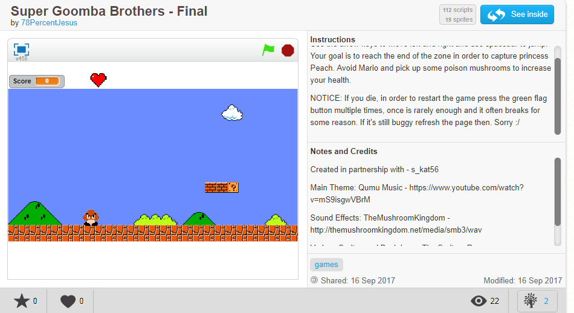
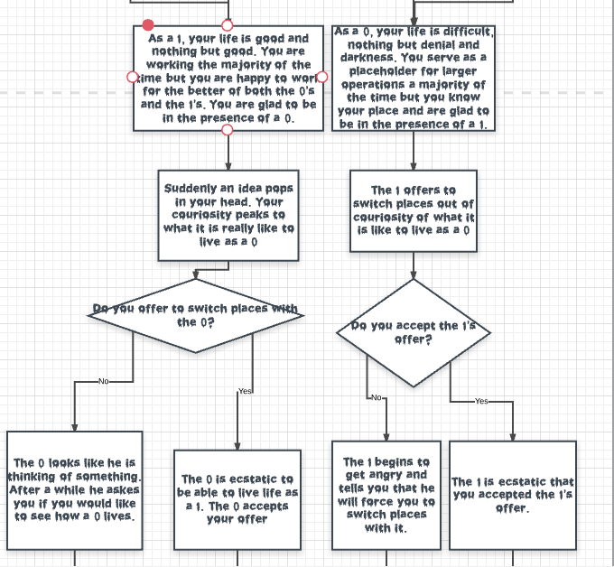

Isaac Canales's CSP Portfolio

Below you will find some of the projects my partner's and I have done so far.
Projects
Scratch Project

For my Scratch Project, my partner Stacey Ramirez and I created a version of the Super Mario Brothers game with a twist. The project took about 5 days of work in-class and at home.
App Inventor Project

For my App Inventor project, an easy to use and practical shopping list Rick Kitada and I made in about 6 days.
Flow Chart for Python Interactive Story Project

For my Python Project, my partner Juvenchy Geoffry and I, had to create a flow chart in order to plan out our interactive story on repl.it before actually programming it.
Repl.it Python Interactive Story Project